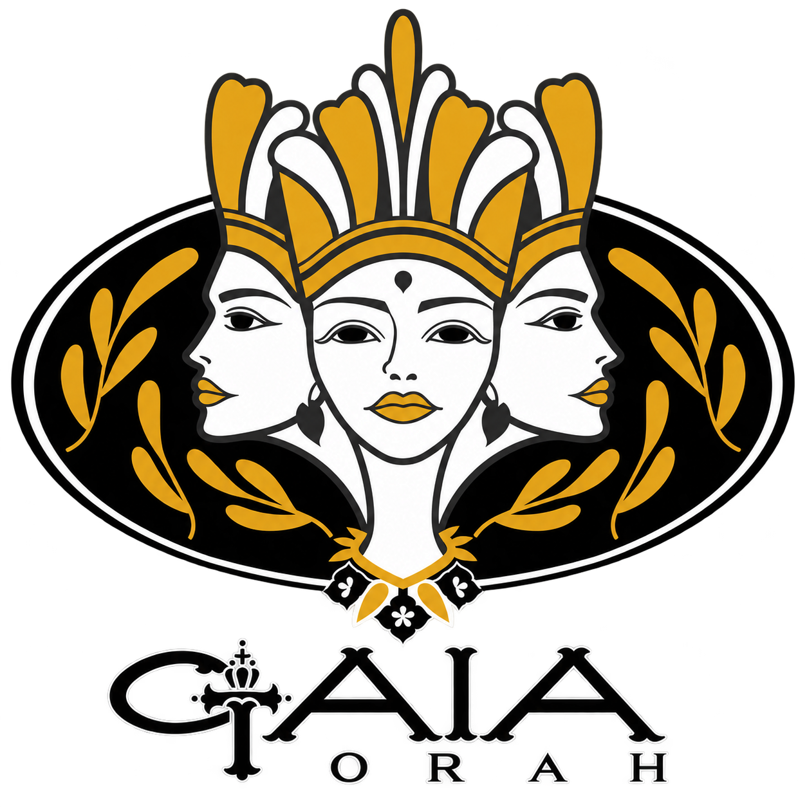
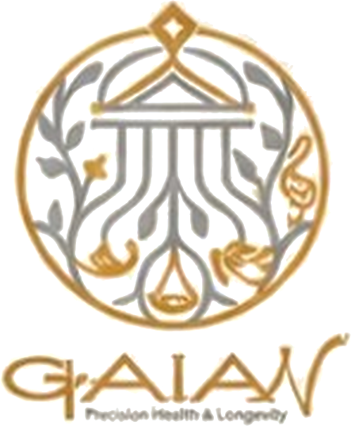

GAIA 眾神殿
高端草本×預防醫學×靈魂共鳴
生活照護場域
高端養護與情感共鳴交界
結合天然草本、零添加配方
讓照顧自己，成為日常生活的一部分
About GAIAN
一種為未來而生的生活方式
融合整合醫學、美學、藝術與空間體驗，
重新思考健康擁有的樣貌
Our Story
GAIAN · A NEW ERA OF LONGEVITY.
一段關於重新理解健康的開始
大多數人對於醫療的想像，是從膽怯延伸的；與醫療的關係，是從一個問題開始的。身體出現訊號，於是尋求治療；療程結束，關係也跟著結束。
GAIAN 想做的，是把這段關係往前延展一些。理解、評估、管理、預防，一直到長期的健康規劃——讓醫療不只在問題發生之後才出現，也能更早參與每一個人對自己身體的理解。
GAIAN 不是一般診所，也不是醫美品牌、健康會館或高級 SPA。我們以中西醫整合、預防醫學、健康管理與健康美學為核心，讓對自己的照顧，不再只是特定時刻的安排，而能自然融入日常。讓健康不再只是生病之後才開始處理的事，而是一項值得被長期理解、管理與經營的人生資產。
真正的健康
不是強迫身體改變，
而是順應它的節奏
GAIA × GAIAN

美×健康×生活
GAIA 是整體品牌精神的起點
以生活美學、身心照顧與健康理念
高端草本×預防醫學×靈魂共鳴
生活照護場域
高端養護與情感共鳴交界
結合天然草本、零添加配方
讓照顧自己，成為日常生活的一部分

預防醫學×能量療癒×光年肌齡
GAIA 美的概念館之核心療癒場域
作為概念館內的深層療癒核心
結合科技、醫學與身心調理
讓人重新理解：健康與美，本為一體
GAIA 是我們堅守的信念
GAIAN 是信念真正落地後，
人們可以感受到的生活方式
How It Becomes Real
完整的 GAIAN，不會停在醫療項目與療程列表
Philosophy
五件我們認為值得被說清楚的事
身體發出的訊號，值得被更完整地理解，而不是急著被安撫或解決。
醫療不應只在疾病發生後出現。它更應協助人們理解身體、認識健康風險、建立健康意識，並做出更適合自己的健康選擇。
每個人的身體狀態、年齡、工作方式、壓力、生活習慣、睡眠與情緒都不同。GAIAN 不會給所有人相同的答案。
健康是一個整體狀態——身體、心理、睡眠、壓力、代謝、生活方式、環境，以及長期的健康風險，共同構成。
健康為本，與美共生。健康是基礎，美則可以是健康與良好生命狀態自然呈現的一部分，一種為未來而生的生活方式。
Worldview
世界觀不只是一種宣言，而是在每一次選擇中
都可以被拿出來檢驗的原則
醫療的第一要素永遠是專業可信度。GAIAN 可以有美感、有哲學、有情緒，但不會為了品牌故事犧牲醫療專業。
低打擾、安靜、被妥善安排。高端不等於高調——真正的高端，往往來自細節與分寸。
每個人的身體、生活與健康需求不同。GAIAN 的角色是協助理解個人狀態，由專業人員協助做出適當判斷。
秩序、比例、留白、光、材質與溫度。讓醫療環境可以同時具有專業與人性。
Vision
我們希望未來人們提到 GAIAN 時，想到的不是一項療程，而是一種如何更好理解自己、管理健康與健康生活的方式。
GAIAN 追求的不是讓所有人都成為客戶，而是讓真正適合的人，更早開始理解自己的身體，建立對健康的主動權，並形成更長期的健康關係。